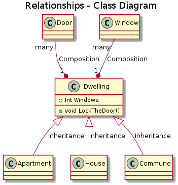
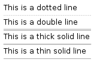
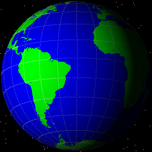
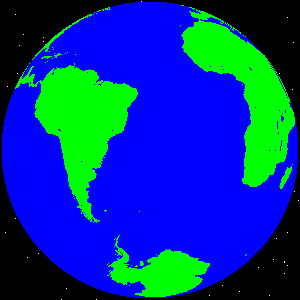

Hello world
World dynamics
Data structures
Graph cluster node gradient
Basic elements
Grid
Separators

Treeview
Brackets
Tabs
Menus
Basic



![@startuml
title Types - Class Diagram
skinparam componentStyle uml2
abstract class AbstractList {
}
class Test << general >> {
}
class System << (S,#FF7700) Singleton >>
class Date << (D,orchid) >>
class Foo1<Generics tag> {
You can use
several lines
..
as you want
and group
==
things together.
__
You can have as many groups
as you want
--
End of class
}
class User {
.. Simple Getter ..
+ getName() : String
+ getAddress() : Address
.. Some setter ..
+ setName() : String
__ private data __
-int age
-- crypted --
-String password
}
enum TimeUnit {
DAYS
HOURS
MINUTES
}
interface List {
}
annotation SuppressWarnings
class Object << general >>
Object <|--- ArrayList
@enduml](../_images/plantuml-c00aaa7e0d65bf389a6981e9d558b9eb16963bc8.png)
![@startuml
title Properties / Methods - Class Diagram
skinparam componentStyle uml2
class Car {
.. Field Examples ..
- Name: Type { arg1, arg2, argn }
+Name: Type { arg1, arg2, argn }
#Name: Type { arg1, arg2, argn }
~Name: Type { arg1, arg2, argn }
.. Method Examples ..
-Name(): Type { arg1, arg2, argn }
+Name(): Type { arg1, arg2, argn }
#Name(): Type { arg1, arg2, argn }
~Name(): Type { arg1, arg2, argn }
.. Static Example ..
+{static} Name(): Type { arg1, arg2, argn }
.. Abstract Example ..
+{abstract} Name(): Type { arg1, arg2, argn }
}
class Car
ICar ()- Car
ICar2 ()-- Car
Car -() ICar3
@enduml](../_images/plantuml-78a5b0be187ac78684fcf4d4fc4a5c43643073ff.png)
![@startuml
skinparam componentStyle uml2
title Packages - Component Diagram
package "Front End" {
component [Graphic User\nInterface] as GUI
}
cloud Internet {
}
node "Middle Tier" {
[Business Logic]
[Data Access] as DA
interface IMath as Math
note left of Math : This is a web\nService Interface
note right of Math : Notice the\nlabel below
interface "IItems" as Items
note left of [Business Logic]
A note can also
be on several lines
like this one
end note
}
database "PostgreSQL\n" {
[Stored Procs]
}
GUI -down-> Internet
Internet -down-( Math
[Business Logic] -up- Math : Web Services
DA -up- Items : .Net
[Business Logic] --( Items
DA .. [Stored Procs]
@enduml](../_images/plantuml-18cb99da303d679dd6c81e50ed37818188a1a901.png)

![@startuml
digraph world {
size="7,7";
{rank=same; S8 S24 S1 S35 S30;}
{rank=same; T8 T24 T1 T35 T30;}
{rank=same; 43 37 36 10 2;}
{rank=same; 25 9 38 40 13 17 12 18;}
{rank=same; 26 42 11 3 33 19 39 14 16;}
{rank=same; 4 31 34 21 41 28 20;}
{rank=same; 27 5 22 32 29 15;}
{rank=same; 6 23;}
{rank=same; 7;}
S8 -> 9;
S24 -> 25;
S24 -> 27;
S1 -> 2;
S1 -> 10;
S35 -> 43;
S35 -> 36;
S30 -> 31;
S30 -> 33;
9 -> 42;
9 -> T1;
25 -> T1;
25 -> 26;
27 -> T24;
2 -> {3 ; 16 ; 17 ; T1 ; 18}
10 -> { 11 ; 14 ; T1 ; 13; 12;}
31 -> T1;
31 -> 32;
33 -> T30;
33 -> 34;
42 -> 4;
26 -> 4;
3 -> 4;
16 -> 15;
17 -> 19;
18 -> 29;
11 -> 4;
14 -> 15;
37 -> {39 ; 41 ; 38 ; 40;}
13 -> 19;
12 -> 29;
43 -> 38;
43 -> 40;
36 -> 19;
32 -> 23;
34 -> 29;
39 -> 15;
41 -> 29;
38 -> 4;
40 -> 19;
4 -> 5;
19 -> {21 ; 20 ; 28;}
5 -> {6 ; T35 ; 23;}
21 -> 22;
20 -> 15;
28 -> 29;
6 -> 7;
15 -> T1;
22 -> T35;
22 -> 23;
29 -> T30;
7 -> T8;
23 -> T24;
23 -> T1;
}
@enduml](../_images/plantuml-188c63385f86ddf7396a233fc916c991dcb2c861.png)
![@startuml
digraph g {
graph [
rankdir = "LR"
];
node [
fontsize = "16"
shape = "ellipse"
];
edge [
];
"node0" [
label = "<f0> 0x10ba8| <f1>"
shape = "record"
];
"node1" [
label = "<f0> 0xf7fc4380| <f1> | <f2> |-1"
shape = "record"
];
"node2" [
label = "<f0> 0xf7fc44b8| | |2"
shape = "record"
];
"node3" [
label = "<f0> 3.43322790286038071e-06|44.79998779296875|0"
shape = "record"
];
"node4" [
label = "<f0> 0xf7fc4380| <f1> | <f2> |2"
shape = "record"
];
"node5" [
label = "<f0> (nil)| | |-1"
shape = "record"
];
"node6" [
label = "<f0> 0xf7fc4380| <f1> | <f2> |1"
shape = "record"
];
"node7" [
label = "<f0> 0xf7fc4380| <f1> | <f2> |2"
shape = "record"
];
"node8" [
label = "<f0> (nil)| | |-1"
shape = "record"
];
"node9" [
label = "<f0> (nil)| | |-1"
shape = "record"
];
"node10" [
label = "<f0> (nil)| <f1> | <f2> |-1"
shape = "record"
];
"node11" [
label = "<f0> (nil)| <f1> | <f2> |-1"
shape = "record"
];
"node12" [
label = "<f0> 0xf7fc43e0| | |1"
shape = "record"
];
"node0":f0 -> "node1":f0 [
id = 0
];
"node0":f1 -> "node2":f0 [
id = 1
];
"node1":f0 -> "node3":f0 [
id = 2
];
"node1":f1 -> "node4":f0 [
id = 3
];
"node1":f2 -> "node5":f0 [
id = 4
];
"node4":f0 -> "node3":f0 [
id = 5
];
"node4":f1 -> "node6":f0 [
id = 6
];
"node4":f2 -> "node10":f0 [
id = 7
];
"node6":f0 -> "node3":f0 [
id = 8
];
"node6":f1 -> "node7":f0 [
id = 9
];
"node6":f2 -> "node9":f0 [
id = 10
];
"node7":f0 -> "node3":f0 [
id = 11
];
"node7":f1 -> "node1":f0 [
id = 12
];
"node7":f2 -> "node8":f0 [
id = 13
];
"node10":f1 -> "node11":f0 [
id = 14
];
"node10":f2 -> "node12":f0 [
id = 15
];
"node11":f2 -> "node1":f0 [
id = 16
];
}
@enduml](../_images/plantuml-a294b40ed8698f8a1aaba1aa95657306e4e62c72.png)
![@startuml
digraph G {
bgcolor="purple:pink" label="agraph" fontcolor="white"
subgraph cluster1 {fillcolor="blue:cyan" label="acluster" fontcolor="white" style="filled" gradientangle="270"
node [shape=box fillcolor="red:yellow" style="filled" gradientangle=90]
anode;
}
}
@enduml](../_images/plantuml-061a4aa1e36078852c9da0e4c0e0ae3fdcf083e5.png)

![@startuml
title Simple Orthogonal Composite State Model
[*] --> NeilDiamond
state NeilDiamond
state "Neil Diamond Onstage" as NeilDiamond {
state Dancing
state Singing
state Smiling
Dancing --> Singing
Singing --> Smiling
Smiling --> Dancing
}
state NDoff
state "Neil Diamond in Dressing Room" as NDoff {
state ThinkingAboutAmerica
state WatchingGlee
ThinkingAboutAmerica --> WatchingGlee
WatchingGlee --> ThinkingAboutAmerica
}
NeilDiamond -Right-> NDoff : Walking
NDoff -Left-> NeilDiamond :Running
@enduml](../_images/plantuml-1db23111654e8014528144ec972a31b097a511ba.png)
![@startuml
Title Concurrent State - C3PO
[*] --> InDanger
State "In Danger" as InDanger {
[*] -> Worrying
Worrying --> Complaining
Complaining --> Worrying
--
state "Having Illusions of Grandeur" as grandeur
state "Calculating Odds of Survival" as survival
[*] -> grandeur
grandeur --> survival
survival --> grandeur
--
state "Being Prissy" as prissy
state "Hating Chewbacca" as chewbacca
[*] -> prissy
prissy --> chewbacca
chewbacca --> prissy
}
@enduml](../_images/plantuml-ef3113a139231ebe5eb71691e04777819c0f9ecc.png)

![@startuml
xearth
61.17 -150.00 "Anchorage" # Alaska, USA
38.00 23.73 "Athens" # Greece
33.4 44.4 "Baghdad" # Iraq
13.73 100.50 "Bangkok" # Thailand
39.92 116.43 "Beijing" # China
52.53 13.42 "Berlin" # Germany
32.3 -64.7 "Bermuda" # Bermuda
42.33 -71.08 "Boston" # Massachusetts, USA
-15.8 -47.9 "Brasilia" # Brazil
-4.2 15.3 "Brazzaville" # Congo
-34.67 -58.50 "Buenos Aires" # Argentina
31.05 31.25 "Cairo" # Egypt
22.5 88.3 "Calcutta" # India
-33.93 18.47 "Cape Town" # South Africa
33.6 -7.6 "Casablanca" # Morocco (Rabat?)
41.83 -87.75 "Chicago" # Illinois, USA
32.78 -96.80 "Dallas" # Texas, USA
28.63 77.20 "New Delhi" # India
39.75 -105.00 "Denver" # Colorado, USA
24.23 55.28 "Dubai" # UAE (Abu Dhabi?)
-27.1 -109.4 "Easter Island" # Easter Island
-18.0 178.1 "Fiji" # Fiji
13.5 144.8 "Guam" # Guam
60.13 25.00 "Helsinki" # Finland
22.2 114.1 "Hong Kong" # Hong Kong
21.32 -157.83 "Honolulu" # Hawaii, USA
52.2 104.3 "Irkutsk" # Irkutsk, Russia
41.0 29.0 "Istanbul" # Turkey (Ankara?)
-6.13 106.75 "Jakarta" # Indonesia
31.8 35.2 "Jerusalem" # Israel
34.5 69.2 "Kabul" # Afghanistan
27.7 85.3 "Kathmandu" # Nepal
50.4 30.5 "Kiev" # Ukraine
3.13 101.70 "Kuala Lumpur" # Malaysia
6.45 3.47 "Lagos" # Nigeria
-12.10 -77.05 "Lima" # Peru
51.50 -0.17 "London" # United Kingdom
40.42 -3.72 "Madrid" # Spain
14.6 121.0 "Manila" # The Phillipines
21.5 39.8 "Mecca" # Saudi Arabia
19.4 -99.1 "Mexico City" # Mexico
25.8 -80.2 "Miami" # Florida, USA
6.2 -10.8 "Monrovia" # Liberia
45.5 -73.5 "Montreal" # Quebec, Canada
55.75 37.70 "Moscow" # Russia
-1.28 36.83 "Nairobi" # Kenya
59.93 10.75 "Oslo" # Norway
48.87 2.33 "Paris" # France
-32.0 115.9 "Perth" # Australia
45.5 -122.5 "Portland" # Oregon, USA
-0.2 -78.5 "Quito" # Ecuador
64.15 -21.97 "Reykjavik" # Iceland
-22.88 -43.28 "Rio de Janeiro" # Brazil
41.88 12.50 "Rome" # Italy
11.0 106.7 "Ho Chi Minh City" # Vietnam (Hanoi?)
37.75 -122.45 "San Francisco" # California, USA
9.98 -84.07 "San Jose" # Costa Rica
18.5 -66.1 "San Juan" # Puerto Rico
-33.5 -70.7 "Santiago" # Chile
1.2 103.9 "Singapore" # Singapore
42.67 23.30 "Sofia" # Bulgaria
59.33 18.08 "Stockholm" # Sweden
-33.92 151.17 "Sydney" # Australia
-17.6 -149.5 "Tahiti" # Tahiti
16.8 -3.0 "Timbuktu" # Mali (Bamako?)
35.67 139.75 "Tokyo" # Japan
43.70 -79.42 "Toronto" # Ontario, Canada
32.9 13.2 "Tripoli" # Libya
47.9 106.9 "Ulan Bator" # Mongolia
49.22 -123.10 "Vancouver" # B.C., Canada
48.22 16.37 "Vienna" # Austria
38.9 -77.0 "Washington" # United States
-41.28 174.78 "Wellington" # New Zealand
62.5 -114.3 "Yellowknife" # N.T., Canada
90.00 0.00 "North Pole" # North Pole
-90.00 0.00 "South Pole" # South Pole
@enduml](../_images/plantuml-6adaee8a33cb3d2a1bce6ea3177974314e27d065.png)